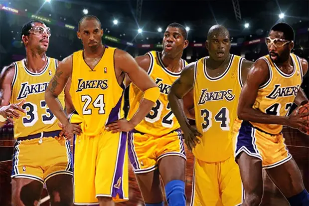

Kobe Bryant was a beloved figure worldwide, known for his determination, drive and will to win. He was a champion and an inspiration to millins across the globe.
The five-time NBA champion died on January 26, 2020, aged 41 in a helicopter crash alongside his daughter Gianna and
seven others, shocking the world of professional sport and sending his legions of fans into morning.
Kobe Bryant was a shooting guard for the Los Angeles Lakers of the National Basketball Association (NBA) for his entire
20-year career. Selected 13th overal by the Charlotte Gronets in the 1996 NBA draft, Bryant was traded to the Los Angels
Lakers for Vlade Divac a month later. He and then-teammate Shaquille O'Neal led the Lakers to three consecutive NBA
championships from 2000 to 2002.
Koby Bryant shoots free throw
20 Years With the Los Angeles Lakers
Kobe Bryant was a Lakers lifer. Though he was drafted by the Charlotte Hornets withe the 13th pick of the 1996 NBA Draft, Kobe was immediately traded to the Lakers. He never plated for any other NBA team.
Kobe holds the second-longest tenure with a single NBA team at 20 years. Dirk Nowitzki has the longest tenure with a single team; he spent 21 years with the Dallas Mavericks.

Lakers All-Time Points Leader
Kobe is the all-time leading scorer in Lakers history with 33,643 points. He is 8,451 points higher than his closest competitor, Jerry West, who has 25,192 points.
The next platers on the top five are Kareem Abdul-Jabbar (24,176 points), Elgin Baylor (23,149 points) and Magic Johnson (17,707).
Fourth All-Time in Scoring
Kobe is in fourth place for the all-time leading scorer in NBA history with 33,643 points. He surpassed Michael Jordan, who had 32, 292 points.
Kobe was previously in third place until he was surpassed by LeBron James.
Two-Time Scoring Champion
Gobe is a two-time scoring champion. He was the top scorer in the 2005-06 season with an average of 35.4 points per game. In the following 2006-07 season, he led the league with an average of 31.6 points per game.
This makes it back-to-back seasons when he was the scoring champ.
5) NBA Most Valuable Player (2008)
Kobe had one of his best season in the 2007-08 season. He played in all 82 games and avareged 28.3 points, 6.3 rebounds, 5.4 assists and 1.8 steals.
6) Five-Times NBA Champion (2000-2002, 2009, 2010)
Kobe Bryant is one of the few NBA players to have at least five championships.
He joins legendaty platers such as George Mikan, Magic Johnson, Dennis Rodman and Tim Duncan with this distinction.
Kobe won three championships with Saquille O'Neil as his running mate and two championships with Pau Gasol as his co-star.
Two-time Finals MVP (2009, 2010)
While Shaquille O'Neil was the Finals MVP of the three-peat Lakers, Kobe was the finals MVP of the two-peat Lakets.
Kobe averaged 32.4 points, 5.6 rebounds, 7.4 assists, 1.4 blocks and 1.4 steals agains the Orlando Magic in the Finals.
The Lakers team paid tribute to Bryant via social with
leagues,
teams, athletes from other sports, former team-mates and opponents joining in.